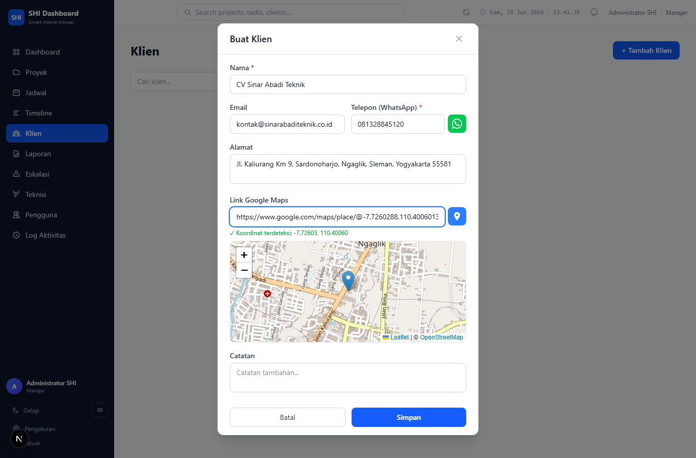
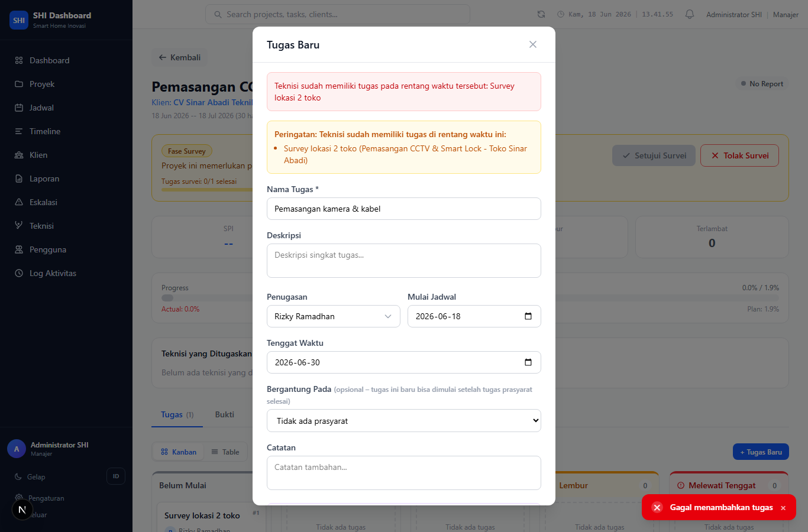
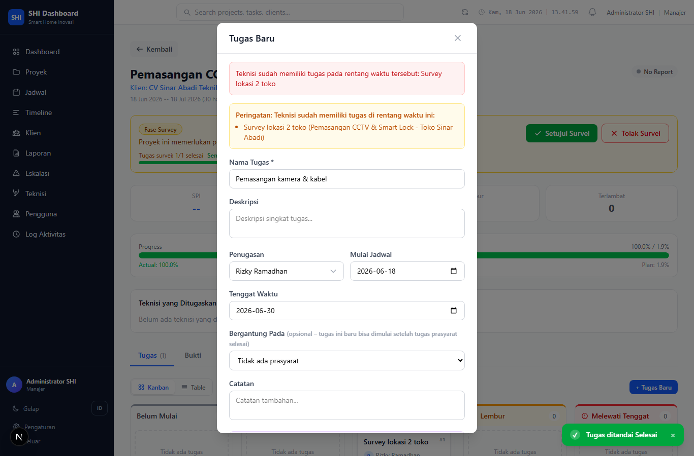
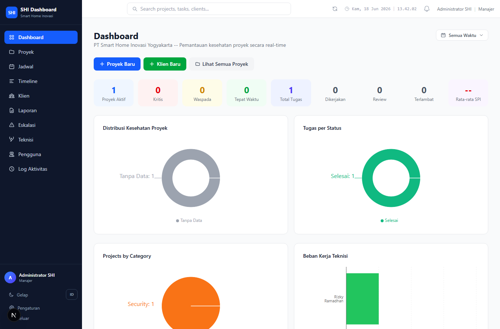

Aku jalankan sendiri panduan-demo-sidang.html dari awal sampai akhir, screenshot tiap langkah.
Tanggal uji: 18 Jun 2026 · Metode: Playwright (browser asli, BUKAN curl) · 16 langkah, 16 screenshot
Aku bikin stack terisolasi sendiri lewat code (python run.py --new --iso) supaya
tidak menyentuh data kerjamu: DB sendiri di port 5544, web sendiri di :3100, build
.next-iso terpisah. Database EMPTY (8 akun login, 0 data) sesuai maumu, lalu aku
buat semua data dari nol lewat form seperti di guide.
| Hal | Status | Bukti |
|---|---|---|
| Login manajer & teknisi | JALAN | 01, 16 |
| Buat klien + Link Google Maps (koordinat + peta) | JALAN | 04, 05 |
| Buat proyek | JALAN | 07, 08 |
| Buat tugas + penjadwalan (teknisi, tanggal) | JALAN | 10, 11 |
| Tandai Selesai → SPI & RAG re-hitung | JALAN | 11 vs 13 |
| Dashboard update saat dibuka (tanpa F5) | JALAN | 14 = 15 |
| Teknisi lihat hasil kerja yang sama (konsisten antar peran) | JALAN | 16 |




Di Dashboard manajer, grafik lain Bahasa Indonesia (Distribusi Kesehatan Proyek, Tugas per Status, Beban Kerja Teknisi), TAPI satu grafik tetap Inggris: "Projects by Category" + teks kosong "No project data available". Kelihatan saat sidang.
next.config.mjs padahal file next.config.ts
MENENGAHTahap akhir Dockerfile menyalin next.config.mjs yang tidak ada (project pakai
.ts).
Artinya python run.py --build / build image produksi akan GAGAL. Dev
(--new) tidak terpengaruh.
Preview peta pakai tile OpenStreetMap online. Saat uji (headless tanpa internet) tile gagal → peta abu-abu kosong (koordinat tetap terdeteksi). Kalau ruang sidang tidak ada internet, peta akan kosong.
Ini kemungkinan "data ga auto refresh" yang kamu alami. Faktanya:
Proyek yang baru dibuat tampil Critical/merah seketika (SPI 0, karena 0 tugas selesai). Begitu 1 tugas diselesaikan di hari pertama, SPI melonjak ke 10.000 (nilai maksimum/cap) & jadi On Track/hijau. Sebabnya: di awal proyek, "waktu berjalan" (PV) sangat kecil, jadi rasio EV/PV jadi besar sekali.
--iso menambah baris di tsconfig.json INFOSaat --iso jalan, Next.js otomatis menambah .next-iso/types/**/*.ts ke
frontend/tsconfig.json include. Tidak berbahaya (cuma glob types). Bisa dirapikan manual
kalau mengganggu.
Semua sudah jadi code, tinggal jalankan:
| Langkah | Perintah |
|---|---|
| 1. Nyalakan stack terisolasi (DB 5544 + web 3100, empty) | python run.py --new --iso |
| 2. Jalankan walkthrough + screenshot | cd docs/hasil-uji && python walkthrough.py |
| 3. Hentikan + bersihkan stack iso | python run.py --iso --stop (lalu Ctrl+C di terminal dev) |
docs/hasil-uji/): 01..16 +
_console-errors.json.
Stack iso sekarang merekam seluruh log sistem ke satu folder, siap kamu serahkan ke sesi berikutnya:
D:\__CODING\personal\_gf\irene\shi-crm\iso-logs\ (folder iso-logs/ di root
proyek)
| File | Isi | Sumber |
|---|---|---|
actions-timeline.log |
TIMELINE aksi — tiap langkah diberi garis pemisah ==== STEP NN ====,
lalu API call + console yang terjadi di langkah itu (ber-timestamp) |
walkthrough.py |
api-calls.log |
Setiap panggilan /api/ dari browser: method, URL, status, jam |
walkthrough.py |
browser-console.log |
Semua console.* frontend + page error |
walkthrough.py |
next-dev.log |
Log server Next.js: request API, console di handler, error server, kompilasi |
run.py (tee dev server) |
postgres.log |
Setiap query SQL + koneksi (log_statement=all) — ~280 KB/run |
run.py (follower docker logs) |
README.md |
Penjelasan tiap file + cara baca/regen | run.py |
Mulai dari actions-timeline.log. Tiap baris ber-timestamp jam:menit:detik, jadi bisa
dicocokkan ke
next-dev.log (server+API) dan postgres.log (query DB) di jam yang sama. Contoh
nyata satu aksi:
============================================================================== STEP 02 | 2026-06-18 13:41:34 | Buat klien + Link Google Maps ------------------------------------------------------------------------------ 13:41:34 [api] 200 GET /api/clients ← muat daftar klien 13:41:39 [shot] 04-klien-form-terisi-maps.png 13:41:39 [api] 201 POST /api/clients ← SIMPAN klien (sukses) 13:41:39 [api] 200 GET /api/clients ← daftar di-refresh 13:41:41 [shot] 05-klien-tersimpan.png
409 Conflict saat membuat tugas ke-2 (jadwal overlap dengan tugas ke-1). Itu
BUKAN bug —
fitur anti-dobel-booking bekerja (teknisi tak boleh 2 tugas di rentang waktu sama). Untuk buat 2
tugas, beri rentang jadwal berbeda.
python run.py --new --iso (nyalakan, mulai rekam) →
cd docs/hasil-uji && python walkthrough.py (isi timeline/api/console) →
python run.py --iso --stop (bekukan). Lalu zip folder iso-logs/ +
docs/hasil-uji/ untuk diserahkan.